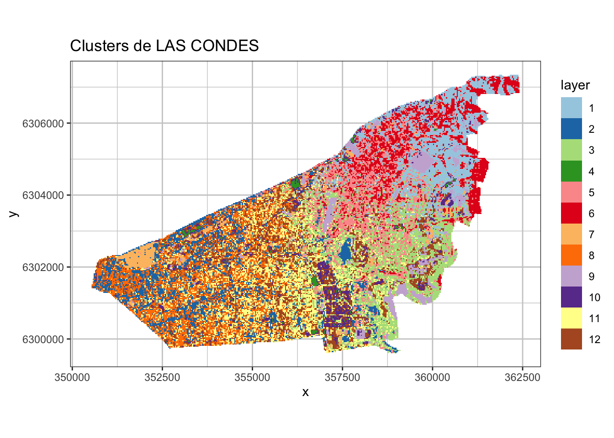
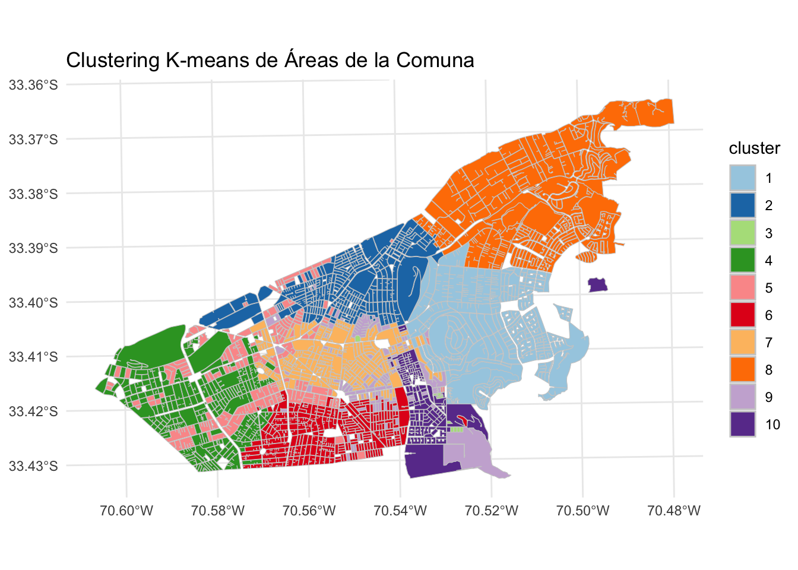
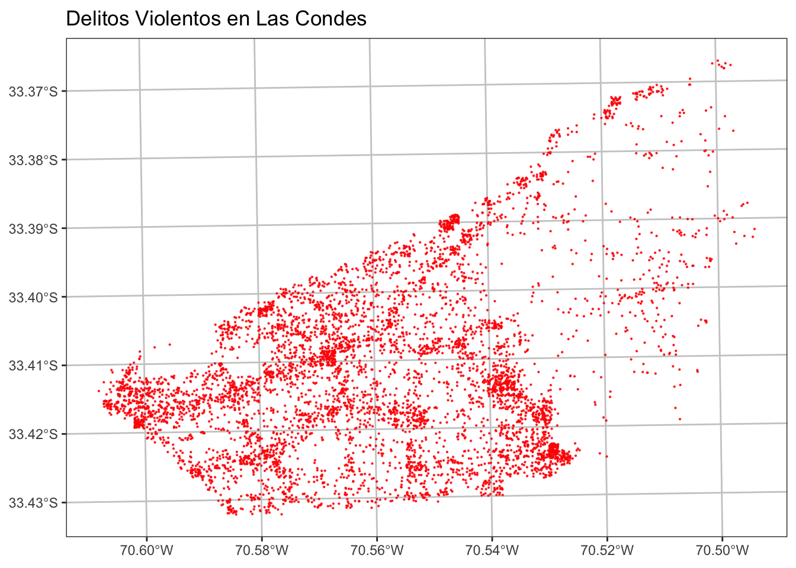
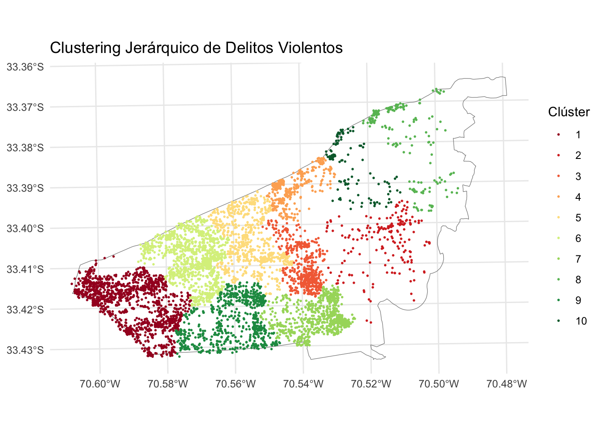
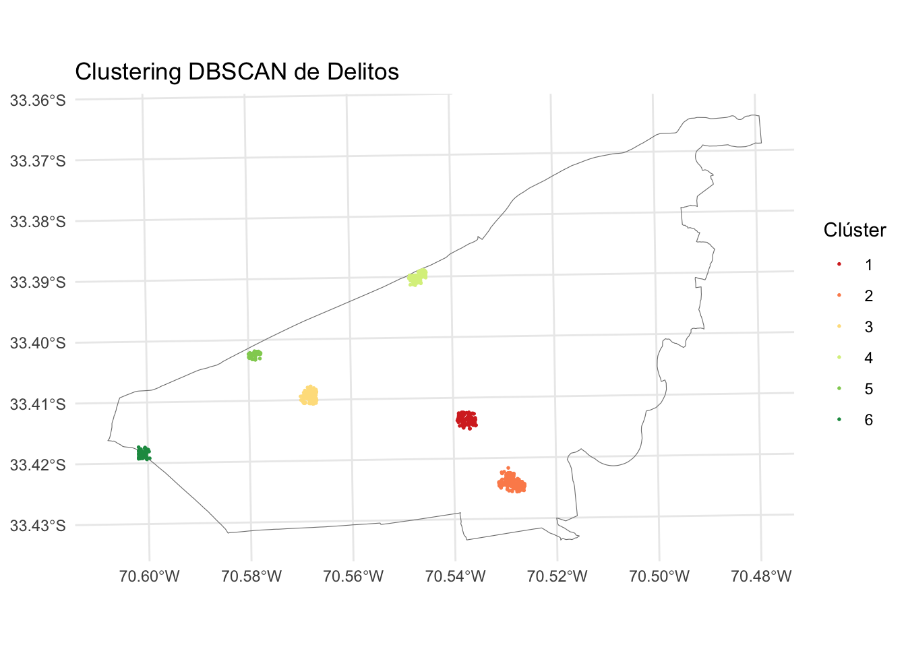
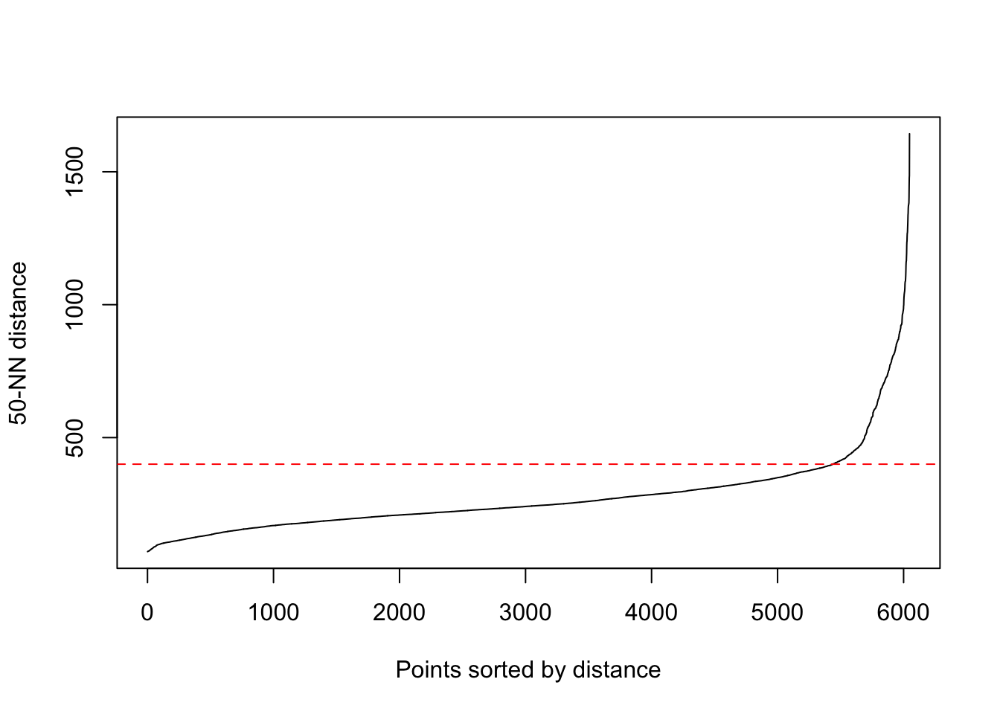
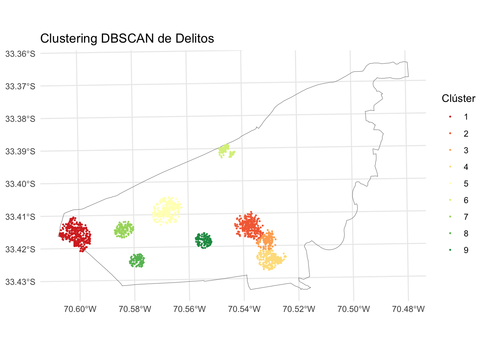

library(raster)
library(dplyr)
library(sf)
library(mapview)
library(dplyr)
library(ggplot2)
library(colormap)9 Clustering Espacial
9.1 Introducción y Fundamentos de Clustering Espacial
El clustering espacial en el contexto de la estadística espacial es una técnica que agrupa datos geográficamente para identificar patrones espaciales en conjuntos de datos. A diferencia de los métodos tradicionales de clustering, el clustering espacial considera tanto las características de los datos como la ubicación geográfica, integrando la dimensión espacial como un componente clave en el proceso de agrupamiento.
9.1.1 Definción de Clustering Espacial
El clustering espacial busca identificar subconjuntos homogéneos de datos geográficamente cercanos. Los clústeres resultantes no solo agrupan puntos basados en similitudes en los atributos, sino también en la proximidad espacial. Esta integración permite encontrar patrones como zonas de alta vulnerabilidad social, áreas comerciales densas, o regiones con alta concentración de delitos.
9.1.2 Importancia de Clustering Espacial
En la estadística espacial, el clustering permite analizar cómo los datos están distribuidos en el espacio y entender si existen agrupamientos naturales que puedan ser relevantes para la planificación y la toma de decisiones. También ayuda a revelar procesos subyacentes en fenómenos espaciales, como la propagación de enfermedades, la distribución de recursos económicos, y los patrones de desarrollo urbano.
9.1.3 Aplicaciones del Clustering Espacial
Políticas Públicas
- Segmentación Territorial: Agrupa regiones en áreas homogéneas para asignar recursos de forma más equitativa, identificando comunidades con mayores necesidades para programas sociales o de salud.
- Planificación de Infraestructura: Prioriza proyectos como hospitales y escuelas según las características de las áreas.
- Diseño de Programas Sociales: Facilita la creación de programas específicos, como empleo juvenil y apoyo a hogares vulnerables.
Urbanismo y Planificación
- Zonas de Desarrollo Prioritario: Identifica áreas que necesitan inversión o intervención urbana, como barrios con deficiencias en vivienda y servicios.
- Espacios Públicos y Verdes: Detecta comunidades densamente pobladas sin acceso a espacios recreativos para planificar parques y áreas comunitarias.
- Infraestructura Comercial: Ayuda a localizar áreas con potencial para expansión comercial y de oficinas.
Seguridad Pública
- Detección de “Focos” Delictivos: Identifica zonas con alta incidencia de delitos para planificar patrullajes y despliegue de recursos.
- Estrategias Preventivas: Combina datos de criminalidad y variables socioeconómicas para diseñar políticas de prevención.
- Evaluación de Políticas: Monitorea el impacto de las intervenciones de seguridad y ajusta estrategias basándose en cambios detectados en los clústeres.
Este resumen destaca cómo el clustering espacial es crucial para planificar y optimizar recursos en múltiples sectores de políticas públicas.
9.1.4 Métodos Principales
- K-means: Este método particiona los datos en un número predefinido de clústeres (k) en función de la proximidad a los centroides. K-means es rápido y eficaz para datos con clústeres de forma esférica y bien separados. En un contexto de políticas públicas, es útil para segmentar áreas con características demográficas o socioeconómicas similares, permitiendo la distribución equitativa de recursos y priorización de infraestructuras.
- Clustering Jerárquico: Este enfoque construye una estructura de árbol o dendrograma que muestra las relaciones entre los datos en distintos niveles de agrupación, sin necesidad de predefinir el número de clústeres. Es ideal para analizar estructuras jerárquicas en los datos y ofrece flexibilidad en el corte del dendrograma. Su uso en políticas públicas puede apoyar la identificación de zonas prioritarias para intervenciones escalonadas o el análisis multiescala en la planificación urbana.
- DBSCAN: Este método basado en densidad detecta clústeres de forma arbitraria y clasifica puntos dispersos como ruido, lo cual es valioso en datos con densidades variables. DBSCAN es particularmente útil para identificar puntos calientes de delitos o zonas con alta concentración de actividad en áreas urbanas. Su capacidad para manejar el ruido lo hace ideal en la evaluación de patrones de riesgo, como en la gestión de la seguridad pública o la detección de zonas de emergencia.
Objetivos de los métodos de clustering
En términos generales lo que se busca encontral algorítmicamente grupos de entidades tales que:
- La similitud intragrupo es alta.
- La similitud entre grupos es baja.
Las medidas de distancia y similitud son cruciales en este proceso
9.2 K-means Espacial
Introducción a K-means
K-means es un método de clustering ampliamente utilizado en análisis de datos. Su objetivo es agrupar puntos en k clústeres, donde cada punto pertenece al clúster cuyo centroide (centro del clúster) es el más cercano. Este enfoque permite segmentar un conjunto de datos en grupos homogéneos según su proximidad en el espacio de características, haciendo que los puntos en un mismo clúster sean similares entre sí y diferentes de los puntos en otros clústeres.
Importancia de K-means
K-means es popular por su simplicidad y eficiencia, lo que lo convierte en una herramienta útil para análisis exploratorio de datos. Permite a los analistas y científicos de datos identificar patrones ocultos y descubrir subgrupos dentro de conjuntos de datos complejos. Esto tiene aplicaciones prácticas en áreas como la segmentación de clientes, la clasificación de imágenes y la detección de patrones en datos geoespaciales.
Funcionamiento
El algoritmo K-means sigue los siguientes pasos básicos:
- Inicialización: Se eligen k centroides iniciales (ya sea aleatoriamente o utilizando métodos específicos).
- Asignación de puntos: Cada punto del conjunto de datos se asigna al clúster cuyo centroide esté más cercano.
- Recalcular centroides: Una vez asignados los puntos, se recalcula el centroide de cada clúster, es decir, el punto medio de todos los puntos en el clúster.
- Repetición: Los pasos de asignación y recalculación de centroides se repiten hasta que los centroides no cambien significativamente o se alcance un número máximo de iteraciones.
Este proceso de ajuste iterativo permite que el algoritmo K-means encuentre la configuración óptima de los clústeres para los datos dados.
J = \sum_{i=1}^{k} \sum_{x \in C_i} \| x - \mu_i \|^2 Donde:
- k es el número total de clústeres.
- C_i es el conjunto de puntos que pertenecen al clúster i .
- x es un punto en el clúster C_i .
- \mu_i es el centroide (o promedio) del clúster C_i .
- \| x - \mu_i \|^2 es la distancia al cuadrado entre el punto x y el centroide \mu_i .
En resumen, K-means es un método de clustering rápido y efectivo para encontrar estructuras en datos, especialmente útil cuando se conocen o se pueden estimar de antemano el número de grupos (k) en los datos.
9.2.1 K-means para Raster (clasificación no supervisada)
Librerías
Lectura de Insumos Satelital
A continuación se procede a la lectura de una imagen satelital en formato raster de la comuna de Las Condes y asigna nombres a cada una de sus bandas espectrales.
r_lc <- brick("data/raster/OLI_LC.tif")
names(r_lc) <- c("aerosol", "blue", "green", "red", "nir",
"swir1", "swir2", "thermal")Definición de Región de Estudio
Se leerá espacial archivo que contiene geometrías de zonas urbanas y filtra los datos para la comuna especificada (“LAS CONDES”), con el cual se genera el contorno de la comuna como un único polígono, transforma la proyección a EPSG:32719 y convierte el objeto a formato Spatial.
mi_comuna <- "LAS CONDES"
zonas <- readRDS("data/censo/zonas_urb_consolidadas.rds")
comuna <- zonas %>% filter(NOM_COMUNA == mi_comuna)
comuna_border <- comuna %>% st_union() %>%
st_transform(32719)
comuna_border_sp <- comuna_border %>%
as("Spatial")Con la región de estudio se enmascara y recorta el raster a los límites de la comuna, de modo que solo queden los píxeles dentro de “LAS CONDES”.
r_lc_masked <- crop(mask(r_lc, comuna_border_sp), y = comuna_border_sp)Convertir Raster a Data frame
Se traen los valores del Raster y se convierten en un DataFrame al cual se elimina la banda aerosol para luego escalar todos los valores numéricos de este dataframe
set.seed(42)
nr <- as.data.frame(r_lc_masked, xy = TRUE, na.rm = TRUE) %>%
dplyr::select(-aerosol)
nr <- scale(nr)Cálculo de K-means Aquí se define el número de clústeres (centros = 12) y se ejecuta el algoritmo K-means, especificando un número máximo de iteraciones (iter.max = 500) y múltiples inicios (nstart = 100) para mejorar la estabilidad de los resultados.
centros <- 12
kmncluster <- kmeans(na.omit(nr), centers = centros, iter.max = 500,
nstart = 100, algorithm = "Lloyd")Resultados al Raster
Ahora se asigna los resultados del clustering K-means al raster original. Crea un nuevo raster (kmeans_raster) donde cada píxel toma el valor del clúster asignado.
# Aplicar los resultados del clustering al raster
v <- getValues(r_lc_masked)
i <- which(!is.na(v))
kmeans_raster <- raster(r_lc_masked) #creamos una copia
kmeans_raster[i] <- kmncluster$clusterVisualización de Resultados
colores <- colormap(colormap = colormaps$viridis,
nshades = centros, format = "hex",
alpha = 1, reverse = FALSE)
colores_2 <- c("#1ABC9C", "#003f5c", "#3498DB", "#9B59B6", "#2f4b7c",
"#F1C40F", "#E67E22", "#E74C3C", "#ECF0F1", "#95A5A6",
"#f95d6a", "#27AE60")
colores_3 <- RColorBrewer::brewer.pal(centros, "Set3")kmeans_raster_df <- raster::as.data.frame(kmeans_raster, xy = TRUE) %>% na.omit()
kmeans_raster_df$layer <- factor(kmeans_raster_df$layer)
ggplot() +
geom_raster(data = kmeans_raster_df ,
aes(x = x, y = y,
fill = layer)) +
coord_equal()+
scale_fill_brewer(palette= "Paired", direction = 1)+
ggtitle(paste0("Clusters de ", mi_comuna) ) +
theme_bw() +
theme(panel.grid.major = element_line(colour = "gray80"),
panel.grid.minor = element_line(colour = "gray80"))
# viewRGB(r_lc_masked, r = 4, g = 3, b = 2)+
# mapview(kmeans_raster, at =1:centros,
# col.regions = colores_2)9.2.2 K-Means espacial Socioeconómico
En este caso se utilizarán datos sociodemográficos de la comuna de Las Condes específicamente la densidad de poblaciói, nivel socio económico y hacinamiento sumado a las coordenadas XY para realizar el análisis de Clusterización espacial.
Selección del área de estudio
Selección de área estudio, en este caso utilizaremos la comuna de Las Condes como ejemplo:
mi_comuna <- "LAS CONDES"
mz_comuna <- readRDS("data/censo/manzanas.rds") %>%
filter(NOM_COM == mi_comuna) %>%
st_transform(32719)Preparación de datos
Primero, normaliza (escala) tres variables clave (POBLACION/SUPERFICIE, JH_ESC_P y H_HACI_T) que representan la densidad de población, nivel socioeconómico y el nivel de hacinamiento, respectivamente. La normalización con scale es importante para evitar que las diferencias de escala en las variables afecten el clustering. Después, se filtran filas con valores faltantes en nivel_socioeconomico y se seleccionan las columnas relevantes para el análisis.
# Normalizar las variables (opcional, pero recomendado para K-means)
datos_sf <- mz_comuna %>%
mutate(
densidad_personas = scale(POBLACION/SUPERFICIE),
nivel_socioeconomico = scale(JH_ESC_P),
nivel_hacinamiento = scale(H_HACI_T)
) %>%
filter(!is.na(nivel_socioeconomico)) %>%
dplyr::select(COD_INE_ID, densidad_personas,
nivel_socioeconomico, nivel_hacinamiento)Extracción de Coordendas
A continuación se extrae las coordenadas X e Y de cada punto. Las coordenadas y los valores de las variables (densidad_personas, nivel_socioeconomico y nivel_hacinamiento) se combinan en un nuevo DataFrame datos_clustering, que servirá como entrada para el clustering. st_drop_geometry elimina la geometría original, dejando solo los datos numéricos necesarios.
# Extraer las coordenadas y variables para clustering
datos_clustering <- datos_sf %>%
st_centroid() %>%
st_coordinates() %>%
as.data.frame() %>%
mutate(X = scale(X), Y = scale(Y)) %>%
bind_cols(datos_sf %>% st_drop_geometry())Ejecución de K-means
Aquí se ejecuta el algoritmo K-means en los datos preparados. Las columnas seleccionadas para el clustering son X, Y, densidad_poblacion, nivel_socioeconomico y nivel_hacinamiento. El argumento centers = 12 indica que el clustering debe generar 12 clústeres. set.seed(42) asegura que los resultados del clustering sean reproducibles.
set.seed(42) # Para reproducibilidad
k = 10
kmeans_result <- kmeans(
datos_clustering[, c("X", "Y", "densidad_personas",
"nivel_socioeconomico")],
centers = k
)Post procesamiento
Este bloque añade el resultado del clustering (los identificadores de clúster) al DataFrame espacial datos_sf como una nueva columna cluster. Esto facilita la visualización y el análisis de los clústeres dentro de la geometría espacial original.
# Agregar los resultados del clustering al objeto espacial
datos_sf$cluster <- factor(kmeans_result$cluster)Visualización de resultados
Cada manzana se colorea según su clúster, usando una paleta de colores definida por scale_fill_brewer. El mapa muestra los clústeres de las áreas de la comuna de “LAS CONDES”, permitiendo observar la distribución espacial de los grupos.
ggplot() +
geom_sf(data = datos_sf, aes(fill = cluster), color ="gray80",
alpha=1, size= 0.1) +
scale_fill_brewer(palette= "Paired", direction = 1)+
labs(title = "Clustering K-means de Áreas de la Comuna", color = "Clúster") +
theme_minimal()
# mapview(datos_sf, zcol = "cluster", col.regions = colores_2)9.3 Clustering Jerárquico
Introducción al Clustering Jerárquico
El clustering jerárquico es un método de agrupamiento que organiza los datos en una estructura de árbol o dendrograma. A diferencia de K-means, no requiere especificar de antemano el número de clústeres y permite observar cómo los grupos se forman de manera gradual, lo que es útil para entender la estructura jerárquica de los datos.
Importancia del Clustering Jerárquico
Este método es especialmente útil cuando queremos entender las relaciones entre los datos en diferentes niveles de similitud, ya que nos permite identificar subgrupos dentro de los grupos mayores. Es comúnmente utilizado en la biología para clasificar especies, en procesamiento de texto para agrupar documentos, y en análisis geoespacial para identificar patrones de proximidad y similitud en los datos.
Funcionamiento
El clustering jerárquico puede ser de dos tipos:
- Aglomerativo (de abajo hacia arriba): Comienza con cada punto en su propio clúster y, en cada paso, combina los clústeres más similares hasta que todos los puntos están en un solo clúster.
- Divisivo (de arriba hacia abajo): Comienza con todos los puntos en un solo clúster y, en cada paso, divide el clúster menos homogéneo hasta que cada punto está en su propio clúster.
El proceso aglomerativo es el más común y sigue estos pasos básicos:
- Calcular la matriz de distancias: Calcular las distancias entre todos los puntos en el conjunto de datos.
- Combinar los clústeres más cercanos: Agrupar los dos clústeres que tienen la menor distancia entre sí.
- Actualizar la matriz de distancias: Recalcular las distancias entre los nuevos clústeres combinados y los otros clústeres.
- Repetir hasta obtener un único clúster: Continuar agrupando hasta que todos los puntos se encuentren en un único clúster, formando así un dendrograma.
Fórmula del Clustering Jerárquico
En cada paso, la distancia entre dos clústeres C_i y C_j se calcula de diferentes formas, dependiendo del criterio de enlace seleccionado:
- Enlace Completo:
d(C_i, C_j) = \max \{ d(x, y) : x \in C_i, y \in C_j \}
Aquí, la distancia entre dos clústeres es la máxima distancia entre cualquier par de puntos en los dos clústeres.
- Enlace Simple:
d(C_i, C_j) = \min \{ d(x, y) : x \in C_i, y \in C_j \}
En este caso, se utiliza la mínima distancia entre cualquier par de puntos.
- Enlace Promedio:
d(C_i, C_j) = \frac{1}{|C_i| \times |C_j|} \sum_{x \in C_i} \sum_{y \in C_j} d(x, y)
Calcula la distancia promedio entre todos los pares de puntos entre los clústeres.
- Enlace de Centroide:
d(C_i, C_j) = d(\mu_i, \mu_j)
Aquí, la distancia es simplemente la distancia entre los centroides de los dos clústeres.
Interpretación del Dendrograma
El dendrograma resultante muestra cómo se fusionan los clústeres en diferentes niveles de similitud. Al cortar el dendrograma a diferentes alturas, puedes obtener distintos números de clústeres, permitiendo una segmentación flexible y adaptativa de los datos.
En resumen, el clustering jerárquico es un método poderoso para observar la estructura de los datos y analizar patrones de similitud en varios niveles.
9.3.1 Clustering Jerárquico a Delitos Violentos
Lectura y visualización de insumos
Lectura de puntos correspondientes a casos violentos en la comuna de Las Condes. Acá se convierte el DataFrame violencia_df a un objeto espacial sf usando las columnas de coordenadas x e y, y asigna el sistema de coordenadas EPSG:32719, adecuado para el área de Chile central.
#lectura
violencia_df <- readRDS(file = "data/delitos/casos_violencia.rds")
head(violencia_df) id x y
4423 1 351501.2 6301276
4836 2 359214.9 6303245
4837 3 351866.6 6301303
4844 4 351303.1 6301359
4916 5 351536.6 6301306
5125 6 357105.9 6301723# Dataframe to sf object
violencia <- st_as_sf(x = violencia_df,
coords = c("x", "y"), crs = 32719)
# Cisualizacion
ggplot() +
geom_sf(data = violencia, color = "red",
alpha=0.8, size= 0.1)+
ggtitle("Delitos Violentos en Las Condes") +
theme_bw() +
theme(panel.grid.major = element_line(colour = "gray80"),
panel.grid.minor = element_line(colour = "gray80"))
Extracción de Coordenadas
En el siguiente código se extraerá solo las coordenadas x e y del objeto espacial violencia, descartando otras columnas (como id). Convierte las coordenadas en un DataFrame para preparar los datos para el análisis de clustering.
# Extraer las coordenadas y variables para clustering
data <- violencia %>%
dplyr::select(-id) %>%
st_coordinates() %>%
as.data.frame()
head(data) X Y
1 351501.2 6301276
2 359214.9 6303245
3 351866.6 6301303
4 351303.1 6301359
5 351536.6 6301306
6 357105.9 6301723Cálculo de Clustering Jerárquico
Se definirá los parámetros para el clustering jerárquico: k = 10 (para dividir los datos en 10 clústeres) y linkage = "complete" (método de enlace completo, que agrupa en función de la distancia máxima entre puntos). Luego, aplica el clustering jerárquico con hclust y obtiene 10 clústeres mediante cutree.
k = 10
linkage = "complete"
object <- hclust(dist(data), method = linkage)
hclust_result <- cutree(object, k = k)Posteriormente se añade los resultados del clustering como una nueva columna hclust_cluster en el objeto espacial violencia para asociar cada punto con su clúster respectivo. Luego, muestra la distribución de puntos en cada clúster.
# Agregar resultados al DataFrame espacial
violencia$hclust_cluster <- factor(hclust_result)
table(violencia$hclust_cluster)
1 2 3 4 5 6 7 8 9 10
1353 185 540 368 664 1121 807 183 710 116 Visualización de Resultados
Finalmente se crea un mapa con clúster jerárquico que permite analizar la distribución y agrupación de los delitos violentos en la comuna.
ggplot() +
geom_sf(data = comuna_border, fill = NA, color = "gray50" )+
geom_sf(data = violencia, aes(color = hclust_cluster), alpha = 1, size = 0.3) +
scale_color_brewer(palette = "RdYlGn") +
labs(title = "Clustering Jerárquico de Delitos Violentos", color = "Clúster") +
theme_minimal()
# mapview(violencia, zcol = "hclust_cluster", cex=0.5)9.4 Clustering DBSCAN
Introducción al Clustering DBSCAN
DBSCAN (Density-Based Spatial Clustering of Applications with Noise) es un método de agrupamiento basado en la densidad de puntos. A diferencia de métodos como K-means, DBSCAN no requiere especificar de antemano el número de clústeres y puede identificar clústeres de forma arbitraria, independientemente de su forma, mientras ignora puntos que no forman parte de ninguna agrupación, etiquetándolos como ruido.
Importancia de DBSCAN
DBSCAN es útil cuando se trabaja con datos espaciales y otros datos que contienen áreas densamente agrupadas mezcladas con áreas dispersas. Es especialmente eficaz para detectar clústeres en presencia de ruido y es ampliamente utilizado en análisis geoespacial, detección de anomalías, y procesamiento de imágenes.
Funcionamiento
DBSCAN identifica los clústeres mediante dos parámetros clave:
eps: El radio de búsqueda o distancia máxima dentro de la cual los puntos son considerados vecinos.
minPts: El número mínimo de puntos necesarios para formar un clúster dentro del radio eps.
El algoritmo sigue estos pasos:
- Clasificar puntos:
- Punto central: Un punto que tiene al menos minPts puntos dentro de su radio eps.
- Punto frontera: Un punto que tiene menos de minPts puntos en su vecindad pero está dentro de la vecindad de un punto central.
- Punto de ruido: Un punto que no es ni central ni frontera.
- Expansión del clúster:
- DBSCAN elige un punto central no visitado y lo expande, agrupando todos los puntos dentro de su radio eps como parte del clúster.
- Si un punto frontera se encuentra en la vecindad, también se incluye en el clúster.
- Continúa expandiendo hasta que no quedan más puntos alcanzables en ese clúster, luego pasa a otro punto central no visitado.
- Identificación de puntos de ruido: Los puntos que no cumplen con los requisitos para ser un punto central o frontera son etiquetados como ruido.
Fórmula para DBSCAN
DBSCAN se basa en una función de vecindad por densidad:
N_\epsilon(p) = {q \in D \mid \text{dist}(p, q) \leq \epsilon}
Donde:
N_\epsilon(p) es la vecindad de un punto p dentro del radio \epsilon.
\text{dist}(p, q) es la distancia entre los puntos $p $y q .
\epsilon(eps) es el radio de vecindad que define la proximidad.
Para cada punto:
Si |N_\epsilon(p)| \geq \text{minPts}, el punto p es considerado un punto central.
Si no, el punto p puede ser un punto frontera si está en la vecindad de un punto central, o ruido si no pertenece a ningún clúster.
Ventajas y Limitaciones
Ventajas: DBSCAN detecta clústeres de cualquier forma, es insensible al ruido, y no requiere especificar el número de clústeres.
Limitaciones: La efectividad de DBSCAN depende de una buena elección de eps y minPts, que puede ser difícil en conjuntos de datos con variaciones de densidad.
Interpretación
Los clústeres generados representan áreas densas de puntos, mientras que los puntos etiquetados como ruido son aquellos en áreas dispersas. DBSCAN es especialmente útil en situaciones donde los clústeres no son esféricos o presentan variabilidad de densidad, como en datos geoespaciales y patrones de movimiento.
9.4.1 Clustering DBSCAN para delitos violentos
En el ejemplo práctico del CLustering DBSCAN para delitos violentos se utilizará la misma data procesada en el ejemplo anterior.
head(data) X Y
1 351501.2 6301276
2 359214.9 6303245
3 351866.6 6301303
4 351303.1 6301359
5 351536.6 6301306
6 357105.9 6301723Parámetros
Primero se establece valores iniciales para los parámetros de DBSCAN: eps es el radio de búsqueda y minPts el número mínimo de puntos en la vecindad para formar un clúster.
# eps: radio de búsqueda para formar clústeres
# minPts: número mínimo de puntos para formar un clúster
eps <- 100
minPts <- 40Cáculo de clustering DBSCAN
Ahora se puede aplicar el clustering DBSCAN sobre el conjunto de datos data con los valores de eps y minPts definidos, generando clústeres iniciales.
# Ejecutar DBSCAN con los parámetros iniciales
library(dbscan)
dbscan_result_v1 <- dbscan(data, eps = eps, minPts = minPts)Luego se asigna el resultado del clustering como una columna cluster en el objeto violencia para identificar el clúster asignado a cada punto. Luego muestra la distribución de puntos en cada clúster.
# Agregar resultados al DataFrame espacial
violencia$dbscan_cluster_v1 <- factor(dbscan_result_v1$cluster)
table(violencia$dbscan_cluster_v1 )
0 1 2 3 4 5 6
5401 118 199 115 96 53 65 Visualización de Resultados v1
Este bloque visualiza los resultados de clustering en un mapa, mostrando los puntos en su clúster respectivo y excluyendo los puntos de ruido (clúster 0)
ggplot() +
geom_sf(data = comuna_border, fill = NA, color = "gray50" )+
geom_sf(data = violencia %>% filter(dbscan_cluster_v1 !="0"),
aes(color = dbscan_cluster_v1), alpha = 1, size = 0.3) +
scale_color_brewer(palette = "RdYlGn") +
labs(title = "Clustering DBSCAN de Delitos", color = "Clúster") +
theme_minimal()
# mapview(violencia %>% filter(cluster!="0"), zcol = "cluster", cex=0.5)Búsqueda de Parámetros
El gráfico de kNNdistplot ayuda a identificar el valor óptimo de eps observando el “codo” en el gráfico. Aquí se coloca una línea horizontal en 400 como referencia para evaluar el valor potencial de eps.
# Evaluación de valores óptimos para eps con kNNdistplot
dbscan::kNNdistplot(data, k = 50)
abline(h = 400, lty = 2, col = rainbow(1), main = "eps optimal value")
Grilla de Combinaciones de Parámetros
A continuación se genera las combinaciones posibles de eps y minPts dentro de los rangos especificados, creando una grilla (params) que se usará para evaluar múltiples combinaciones de parámetros.
eps_options <- seq(100, 400, by = 50)
minPts_options <- seq(10,100, by= 10) # Asegura que tenga 20 valores
params <- expand.grid(eps = eps_options, minPts = minPts_options)Esta función que continúa aplica DBSCAN usando los valores de eps y minPts dados, y devuelve el número de clústeres generados (excluyendo el clúster de ruido 0).
library(purrr)
# Función para aplicar DBSCAN y devolver el número de clústeres
run_dbscan <- function(eps, minPts, data, w = NULL) {
db_result <- dbscan(data, eps = eps, minPts = minPts, weights = w)
num_clusters <- length(unique(db_result$cluster)) - (any(db_result$cluster == 0)) # Resta 1 si hay ruido (cluster 0)
return(num_clusters)
}Ahora se aplica la función run_dbscan a cada combinación de parámetros en params y guarda el número de clústeres en la columna num_clusters. Luego, muestra las combinaciones que generaron la mayor cantidad de clústeres, ayudando a identificar parámetros óptimos.
# Aplicar la función a cada combinación de parámetros con `pmap`
results <- params %>%
mutate(num_clusters = pmap_dbl(list(eps = eps, minPts = minPts),
~ run_dbscan(.x, .y, data)))
# Mostrar los primeros resultados
head(results %>% arrange(desc(num_clusters)), 10) eps minPts num_clusters
1 100 10 68
2 100 20 38
3 150 30 27
4 150 20 23
5 150 40 18
6 150 10 16
7 200 30 15
8 200 50 15
9 100 30 14
10 200 40 14Establece valores finales de eps y minPts tras la evaluación y aplica DBSCAN con estos parámetros. unique muestra los clústeres resultantes, permitiendo verificar la estructura obtenida.
# Definir parámetros finales basados en la búsqueda de grilla
eps <- 250
minPts <- 100
# Aplicar DBSCAN con los parámetros optimizados
dbscan_result_v2 <- dbscan(data, eps = eps, minPts = minPts)
unique(dbscan_result_v2$cluster) [1] 1 0 2 6 3 9 7 4 5 8Asigna el resultado del clustering optimizado a una nueva columna dbscan_cluster en el objeto violencia y muestra la distribución de puntos en cada clúster.
# Agregar resultados al DataFrame espacial
violencia$dbscan_cluster_v2 <- factor(dbscan_result_v2$cluster)
table(violencia$dbscan_cluster)< table of extent 0 >Visualización de Resultados
Genera un mapa que muestra los resultados del clustering DBSCAN con los parámetros optimizados, resaltando la agrupación de los delitos violentos en clústeres específicos y excluyendo puntos de ruido.
ggplot() +
geom_sf(data = comuna_border, fill = NA, color = "gray50" )+
geom_sf(data = violencia %>% filter(dbscan_cluster_v2!="0"),
aes(color = dbscan_cluster_v2), alpha = 1, size = 0.3) +
scale_color_brewer(palette = "RdYlGn") +
labs(title = "Clustering DBSCAN de Delitos", color = "Clúster") +
theme_minimal()
# mapview(violencia %>% filter(dbscan_cluster!="0"),
# zcol = "dbscan_cluster", cex=0.5)9.5 Resumen
El análisis de Clustering Espacial permite segmentar datos geográficos en grupos homogéneos, facilitando la identificación de patrones espaciales y la toma de decisiones informadas en diversos contextos. En este capítulo, exploramos tres técnicas principales de clustering —K-means, Clustering Jerárquico y DBSCAN— cada una con características particulares que las hacen adecuadas para distintas aplicaciones en políticas públicas y análisis territorial.
Cada uno de estos métodos aporta una perspectiva única al análisis espacial, permitiendo a los investigadores y tomadores de decisiones entender mejor los patrones y dinámicas territoriales. La elección del método depende de la naturaleza de los datos y del objetivo del análisis:
- K-means es eficaz cuando se conocen o se pueden estimar los clústeres de antemano y se busca una solución rápida para agrupar áreas con características homogéneas.
- Clustering Jerárquico es adecuado para situaciones en las que se desea explorar las relaciones a distintos niveles y obtener una representación completa de la estructura de los datos.
- DBSCAN es ideal cuando los clústeres tienen formas irregulares y el ruido es una parte importante de los datos, como en la detección de anomalías o áreas con densidad variable.
En resumen, el clustering espacial es una herramienta poderosa en el análisis territorial y la evaluación de políticas públicas, ofreciendo una comprensión profunda de la distribución de características socioeconómicas, de seguridad, y de infraestructura. La aplicación adecuada de estos métodos permite una visión más integral y equitativa de los territorios, optimizando las estrategias de intervención y distribución de recursos en áreas prioritarias.